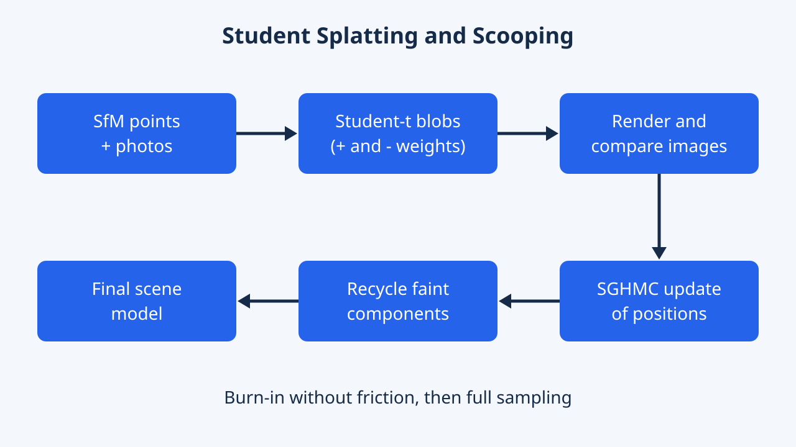

3D Student Splatting and Scooping
Revisits mixture representations in 3D Gaussian Splatting. Student distributions with positive and negative densities, together with a sampling-based optimizer, explore scene representations beyond conventional Gaussian components.
This article reads 3D Student Splatting and Scooping closely; the conference award page lists it as a CVPR 2025 Best Paper Honorable Mention. We summarize the method, the numbers in the paper's tables and the limitations the authors state. Comments marked as EyeCode analysis are editorial opinion, not an official assessment.
Overview
Think of a 3D scene as a pile of soft, glowing blobs seen from many camera angles. Older methods use one kind of blob and can only add light. This paper lets the blobs have adjustable fatness of the edges and lets some blobs take light away, like scooping ice cream. Together with a different training method, the authors report similar or better pictures, and much better results when only a small number of blobs is allowed.
3D Student Splatting and Scooping (SSS) is by Jialin Zhu, Jiangbei Yue, Feixiang He and He Wang. The CVPR 2025 award page lists it as a Best Paper Honorable Mention. It improves 3D Gaussian Splatting (3DGS), a popular way to render new views of a scene from photos.
3DGS stores a scene as many Gaussian blobs that are summed. SSS changes three things: each blob becomes a Student's t distribution with a learnable tail, some blobs carry negative density so they subtract, and training uses a sampling optimizer (SGHMC) instead of plain gradient descent. On 11 scenes from three standard datasets it reports quality that is competitive with or better than seven baselines (Table 1), and it degrades more gracefully when the component count is capped.
The main contributions are the t-distribution mixture, the signed (positive and negative) components, and the sampling scheme for learning them.
SSS reframes 3DGS as an unnormalized mixture model and questions three of its design choices: the Gaussian kernel, the purely additive (monotonic) mixture, and Adam-style optimization of strongly coupled parameters. It replaces them with a Student's t kernel whose degree of freedom is learned, opacities in [-1, 1], and stochastic gradient Hamiltonian Monte Carlo (SGHMC) on the component centers together with a component-recycling step.
The empirical study covers 11 scenes (Mip-NeRF 360, Tanks and Temples, Deep Blending) against Mip-NeRF, 3DGS, GES, 3DHGS, Fre-GS, Scaffold-GS and 3DGS-MCMC, plus a sweep over the maximum number of components (five budgets), and an ablation. The work acknowledges funding from the EU Horizon 2020 programme (grant 899739, CrowdDNA).
Research Problem
Popular 3D scene methods need millions of blobs, which wastes memory. Each blob has one fixed fuzzy shape, and blobs can only pile up. To carve a hole in the middle of an object, you need many blobs just to fake it.
The authors point to two weaknesses of 3DGS: limited expressivity and low parameter efficiency, meaning it needs a large number of components. A Gaussian has a fixed tail shape, so representing very different structures takes many of them.
They re-examine three parts of the 3DGS recipe: the Gaussian kernel, the fact that splatting only adds density, and the optimization. The task is the standard one: input is a set of photos with known cameras and a sparse structure-from-motion (SfM) point cloud; output is a model that renders unseen views. The question is how to get quality with a smaller component budget.
3DGS composes a scene as a weighted sum of 3D Gaussians with center, covariance (rotation times scale), opacity in [0, 1] and view-dependent color by spherical harmonics, rendered by projecting to 2D and compositing front to back. Following the paper's view, this is a 3D mixture fitted to a radiance field, in which each weight also depends on other components through the compositing product.
The paper names three bottlenecks: limited kernel expressivity, non-negativity of the mixture, and optimizer weakness under parameter coupling. The coupling argument is specific: changing the tail parameter changes the family in which center and covariance are being optimized, so those parameters cannot be treated independently. The evaluation question is therefore quality at a fixed component budget, and not only quality when density control is left free.
Key Idea
Two swaps. First, use blobs whose edge thickness can be tuned, from very fat tails to the usual bell shape. Second, allow some blobs to remove color instead of adding it. Then train with a method that deliberately adds a bit of randomness so blobs can escape poor positions.
The paper's slogan is that the model needs to be "neither Gaussians nor splatting". Each component is a multivariate Student's t distribution with a learnable degree of freedom. A low value gives heavy tails (close to a Cauchy), a high value approaches a Gaussian, so one family covers a continuum of shapes.
The second idea is scooping: a component may have negative opacity and subtract color. In the authors' toy example of a torus, positive-only components need at least five to capture the hole, while one positive and one negative component, both at the center, are enough.
The third idea is learning by sampling. Because signed weights make the mixture a non-proper density, the authors write an energy from the rendering loss and run SGHMC, a Monte Carlo method with momentum, friction and noise.
The kernel is $[1+\frac{1}{\nu}(x-\mu)^T\Sigma^{-1}(x-\mu)]^{-(\nu+3)/2}$ with the normalizing constant dropped; after projection the 2D kernel has the same form with exponent $-(\nu+2)/2$, which is what makes forward and backward passes closed-form (unlike GES, which the authors say needs approximation). In practice $\nu$ is limited to [1, 10000].
Signed weights stay linear in the components. The authors also tried the squared mixture of Loconte et al., whose pairwise interactions cost $O(n^2)$ and made it much slower, and rejected it. Learning is posed as sampling from a distribution proportional to $\exp(-\text{loss}-\frac12 r^Tr)$ over parameters and momenta, where friction is meant to decouple $\nu$ from center and covariance. The supplement shows the learned $\nu$ spread widely under SGHMC but concentrate near 1 under 3DGS-style optimization, which the authors read as mode collapse.
Methodology

Start with points from a photo reconstruction. Give each point a blob. Render the blobs, compare with the real photos and nudge the blobs. Faint blobs are moved somewhere useful instead of being thrown away. Some randomness is added on purpose, early on without braking, so blobs explore before they settle.
Input is a set of photos with camera poses and a sparse SfM point cloud. Each point initializes a Student's t component with center, scale, rotation, spherical-harmonics color, opacity in [-1, 1] (kept bounded with tanh) and degree of freedom. Rendering projects components to 2D and composites them front to back, with signed weights.
The loss follows 3DGS-MCMC: a mix of L1 and D-SSIM image errors, plus two regularizers, one penalizing opacity so components are large only when needed and one penalizing covariance eigenvalues so components stay small. Component centers are updated by SGHMC, while the other parameters use Adam.
Training starts with a burn-in without friction for exploration, then full sampling. Instead of clone-and-split density control, near-transparent components are relocated onto high-opacity ones in a way that keeps the rendered image nearly unchanged; at most 5% of components move at a time, and 5% new zero-opacity components are added.
A sigmoid gate (steepness 100, threshold 0.995) switches friction and noise on mainly for near-transparent components. The SGHMC update of the center combines a gradient step scaled by the square of the learning rate, a friction term and Gaussian noise tied to friction, with a decaying step size; without friction it reduces to stochastic gradient Langevin dynamics (SGLD). During burn-in the noise is multiplied by the covariance to preserve anisotropy; afterwards the momentum keeps it. The authors report that SGLD explores widely while SGHMC exploits locally. Note that the paper's text says the gate activates for opacity below 0.005, while the printed formula with threshold 0.995 reads the other way round; we follow the text and flag the ambiguity.
Relocation minimizes the integral of the squared color difference over the whole domain. A moved component takes the target mean; the new opacity satisfies $(1-o_{new})^N = 1-o_{old}$ for $N$ co-located components; and the covariance is rescaled by a closed-form factor involving Beta functions (implemented through log-Gamma for CUDA). Sign is ignored in relocation, which the authors say acts as a useful perturbation. Candidates are drawn from a multinomial over opacities.
Implementation notes from the supplement: the 0.3 low-pass filter of 3DGS is removed in the final model because a t-distribution is not closed under convolution (it is kept only in the SGD ablation baseline); truncation radii for projected components use tabulated critical values interpolated over $\nu$; and no iteration counts or negative-component fractions are printed in the paper, they live in the repository config files. Experiments run on one RTX 4090.
Experiments & Results
| Method | Mip-NeRF 360 PSNR | Mip-NeRF 360 SSIM | Mip-NeRF 360 LPIPS | Tanks&Temples PSNR | Tanks&Temples SSIM | Tanks&Temples LPIPS |
|---|---|---|---|---|---|---|
| Mip-NeRF | 29.23 | 0.844 | 0.207 | 22.22 | 0.759 | 0.257 |
| 3DGS | 28.69 | 0.870 | 0.182 | 23.14 | 0.841 | 0.183 |
| GES | 26.91 | 0.794 | 0.250 | 23.35 | 0.836 | 0.198 |
| 3DHGS | 29.56 | 0.873 | 0.178 | 24.49 | 0.857 | 0.169 |
| Fre-GS | 27.85 | 0.826 | 0.209 | 23.96 | 0.841 | 0.183 |
| Scaffold-GS | 28.84 | 0.848 | 0.220 | 23.96 | 0.853 | 0.177 |
| 3DGS-MCMC | 29.89 | 0.900 | 0.190 | 24.29 | 0.860 | 0.190 |
| SSS (ours) | 29.90 | 0.893 | 0.145 | 24.87 | 0.873 | 0.138 |
| Method | Deep Blending PSNR | Deep Blending SSIM | Deep Blending LPIPS |
|---|---|---|---|
| Mip-NeRF | 29.40 | 0.901 | 0.245 |
| 3DGS | 29.41 | 0.903 | 0.243 |
| GES | 29.68 | 0.901 | 0.252 |
| 3DHGS | 29.76 | 0.905 | 0.242 |
| Fre-GS | 29.93 | 0.904 | 0.240 |
| Scaffold-GS | 30.21 | 0.906 | 0.254 |
| 3DGS-MCMC | 29.67 | 0.890 | 0.320 |
| SSS (ours) | 30.07 | 0.907 | 0.247 |
| Method | δ | 1.4δ | 1.8δ | 2.2δ | 2.6δ |
|---|---|---|---|---|---|
| 3DGS | 19.16 | 20.32 | 20.50 | 21.22 | 21.75 |
| GES | 20.59 | 21.60 | 22.78 | 23.52 | 23.86 |
| 3DHGS | 19.63 | 20.33 | 20.39 | 20.99 | 22.12 |
| 3DGS-MCMC | 27.47 | 27.89 | 28.18 | 28.39 | 28.56 |
| SSS (ours) | 27.72 | 28.14 | 28.43 | 28.66 | 28.84 |


On three standard collections of scenes, the new method is on par with or slightly better than strong rivals, and is clearly better on a perceptual similarity measure in several cases. When only a small budget of blobs is allowed, it holds up much better than the older approach. It trains more slowly than 3DGS.
Setup: 11 scenes (7 Mip-NeRF 360, 2 Tanks and Temples, 2 Deep Blending), metrics PSNR, SSIM and LPIPS. In Table 1 the baseline numbers come from their papers and SSS is the average of three runs; the shared tables below reproduce them. The authors say SSS is best on 6 of the 9 metrics and second best on 2, with the main exception being LPIPS on Deep Blending.
Against the original 3DGS, SSS gains about 1.2 dB on Mip-NeRF 360 (29.90 vs 28.69) and 1.7 dB on Tanks and Temples (24.87 vs 23.14), and its LPIPS is lower on both. Against 3DGS-MCMC the picture is closer: nearly equal PSNR on Mip-NeRF 360, lower SSIM, and clearly better LPIPS.
Parameter efficiency: baselines were re-run with a cap on the number of components, from the initial SfM count to 2.6 times it. SSS is best in 15 of 15 settings of the PSNR comparison in the paper's figure. On Mip-NeRF 360 it keeps 27.72 dB at the smallest budget, while capped 3DGS falls to 19.16 (Table 3 below).
Ablation on Tanks and Temples (Figure 2 of this article): 3DGS 23.14 dB, SGD with positive t 23.80, SGHMC with positive t 24.53, full model with negative components 24.87. Training takes longer than 3DGS (45 versus 21 minutes on Mip-NeRF 360), rendering runs at 71 versus 99 FPS.
Protocol. Table 1 mixes sources (published baseline numbers versus a three-run mean for SSS). For the budget sweep the authors modified the baselines' densification to stop at the cap, without tuning other hyperparameters, so the large drops of 3DGS, GES and 3DHGS partly reflect how those methods behave when forced into a budget they were not designed for. The close competitor is 3DGS-MCMC, which supports a cap natively: on Mip-NeRF 360 SSS leads by about 0.25-0.3 dB PSNR at every budget, but 3DGS-MCMC has equal or slightly higher SSIM (0.803 vs 0.802 at the smallest budget). Gaps are larger on Tanks and Temples (23.67 vs 23.18 at the smallest budget, 24.40 vs 23.93 at 2.6 times) and Deep Blending (28.69 vs 28.38; 29.67 vs 29.35).
Per-scene, 3DGS-MCMC wins PSNR on bicycle and stump (Mip-NeRF 360, Table 1 of the supplement: 26.15 vs 25.68 and 27.80 vs 27.17). The abstract and Section 4.3 state a reduction of as much as 82%, whereas Section 4.3 also gives 98.3% as the maximum (Stump, 83k of 4.75 million) when the 2.6 times budget is compared with the original 3DGS count; from the printed counts we get 57.5% for Train (468k of 1.1m) and 86% for Truck (364k of 2.6m). So the 82% figure cannot be reproduced from the printed counts and should be read as approximate.
Ablation reading (supplement Table 20, Tanks and Temples / Deep Blending PSNR): SGHMC with plain Gaussians already reaches 24.52 / 29.56, essentially equal to SGHMC with positive t (24.53 / 29.75), and the t kernel even lowers SSIM and LPIPS on Tanks and Temples (0.864 / 0.155 vs 0.869 / 0.150). The authors note that individual techniques give small gains and the full model is best. Negative components add 0.34 and 0.32 dB. The ablation on Deep Blending LPIPS shows the full model equal to SGD (0.247). Timing (Table 21): SSS 45, 33 and 21 minutes training and 71, 87 and 100 FPS on Mip-NeRF 360, Tanks and Temples and Deep Blending; 3DGS 21, 12, 21 minutes.
Qualitative. The authors show zoomed crops where SSS restores box-lid indentations, windows, a green track detail, a truck-window reflection and a light switch (Figure 3 of the paper), and for the Train scene under budgets of about 180k to 468k components 3DGS and 3DHGS blur, GES blurs the sky-hill boundary, and 3DGS-MCMC adds white patches in the sky, whereas SSS separates sky from hill without noise. In the supplement the carpet texture in room and window gaps in drjohnson are better restored by SSS than by 3DGS-MCMC. These are the authors' chosen examples, not a failure-case study.
Limitations
The blobs are still smooth and symmetric, and the training method needs careful tuning, for example how many blobs should subtract. Floating junk in the air can still appear, and training takes longer than before.
Reported by the authors
- The primitives are restricted to symmetric, smooth t distributions, which limits what they can represent, and sharp shapes are hard to handle perfectly.
- The sampler needs hyperparameter tuning, such as the percentage of negative components.
- Despite the extra exploration from SGHMC, floating artifacts, a common 3DGS problem, still sometimes appear.
- Future work they name: combining other families such as Laplace with the t-distribution and making SGHMC self-adaptive to balance positive and negative components.
EyeCode analysis (editorial interpretation)
- The paper has no dedicated limitations section; the points above are in the conclusion and supplement.
- The tables show costs the authors only mention briefly: training is slower than 3DGS and 3DGS-MCMC, and rendering is slower (SSS 71 FPS vs 99 and 79 on Mip-NeRF 360; Table 21).
- The official README says the usual 3DGS viewer cannot show SSS output.
Reported by the authors
- Symmetric, smooth primitives (conclusion, supplement Section 7); sharp shapes are difficult.
- Sampler tuning, including the percentage of negative components; the README adds that the friction parameters are strongly correlated with results and large values can cause numerical problems (inf or NaN).
- Floating artifacts can remain.
EyeCode analysis (editorial interpretation)
- Mixed protocols: baseline numbers come from papers while SSS is a three-run mean; the capped-budget baselines were modified by the authors, so absolute gaps to 3DGS, GES and 3DHGS depend on that adaptation. The fairest comparison is 3DGS-MCMC, where PSNR gains are about 0.25-0.5 dB and not uniform across metrics.
- The ablation indicates that most of the gain over SGD comes from the sampler, with the t kernel itself adding little PSNR on Tanks and Temples; the benefit of the new family is thus not isolated cleanly there.
- The printed numbers contain inconsistencies: the 82% figure (see Results), SSS Train PSNR/SSIM/LPIPS of 23.23/0.844/0.170 in the text versus 23.32/0.850/0.166 in the supplement (the supplement matches the printed average of 24.87), a Garden LPIPS of 0.009 for SSS in the supplement, and a 0.860 in a 3DGS-MCMC LPIPS cell where Table 1 gives 0.190. Treat the text numbers cautiously and prefer the main tables.
- Several settings that affect reproducibility, such as iteration counts and burn-in length, are only in the code.
Key Takeaways
Changing the shape of the blobs, letting some blobs subtract, and training with a smarter noisy optimizer together gave good pictures with far fewer blobs than the older recipe.
- A learnable-tail Student's t kernel generalizes the Gaussian.
- Signed components let a mixture carve out density, as in the torus example.
- Compare methods at a fixed component budget, not only at free density control.
- In the paper's ablation, the sampler brings the largest single gain over SGD training.
- The price is longer training and extra tuning.
Suggested directions (EyeCode suggestions, not claims from the paper)
- Test each ingredient separately inside another splatting codebase, such as the sampler alone.
- Read SSS as three separable ingredients with different payoffs: the sampler matters most in the reported ablation, negative components add a smaller steady gain (about 0.3 dB), and the t kernel is most visible at small budgets.
- Coupled parameters are a reason to look at optimizers with momentum and friction, not only at kernels.
- Check protocol details: capped baselines, three-run means, and typos in supplementary tables.
Suggested directions (EyeCode suggestions, not claims from the paper)
- Run an ablation at equal component counts that separates the kernel from the sampler on more datasets.
- Measure memory and rendering speed at equal quality, since the paper reports quality at equal component count.